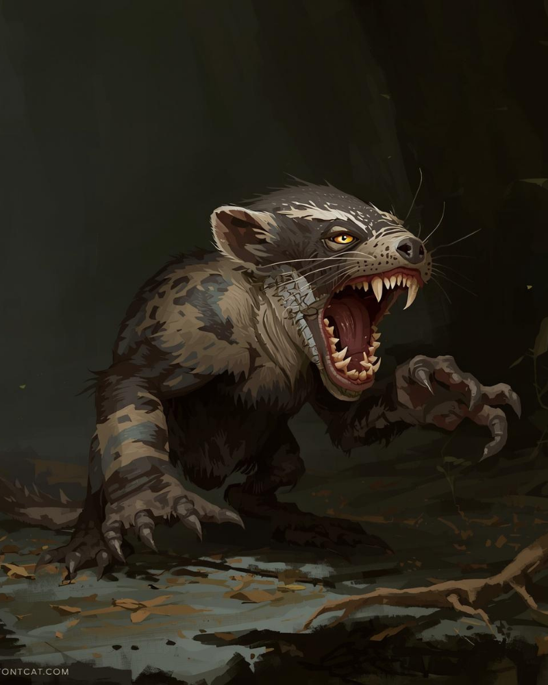
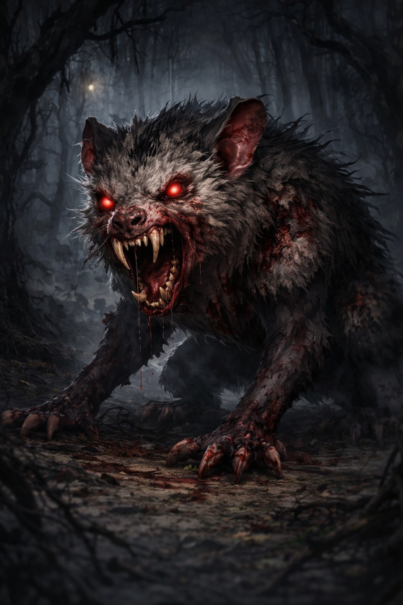
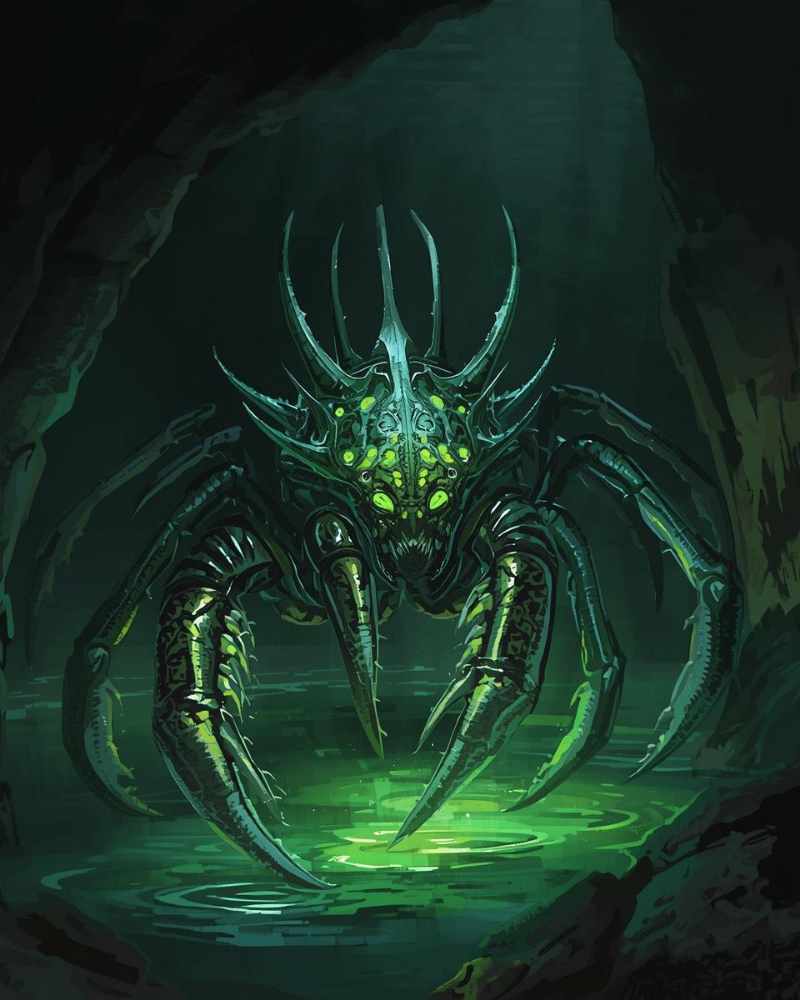
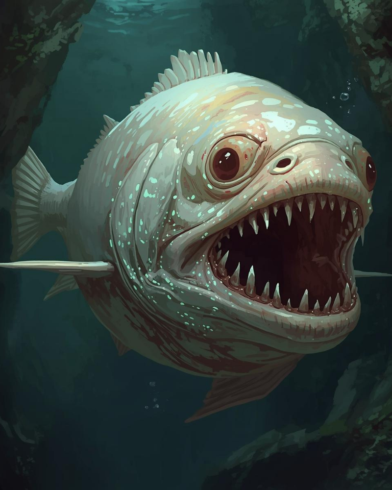
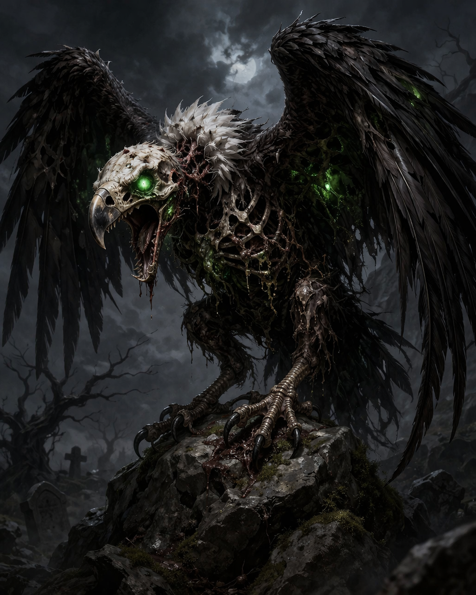
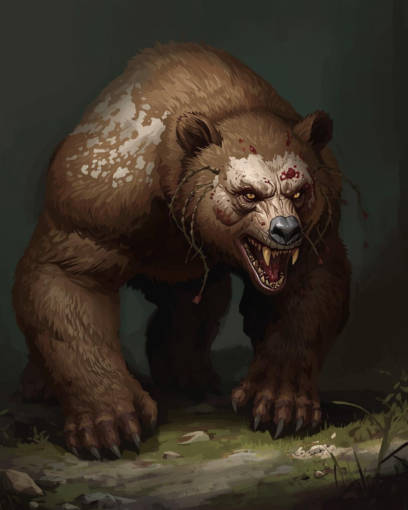
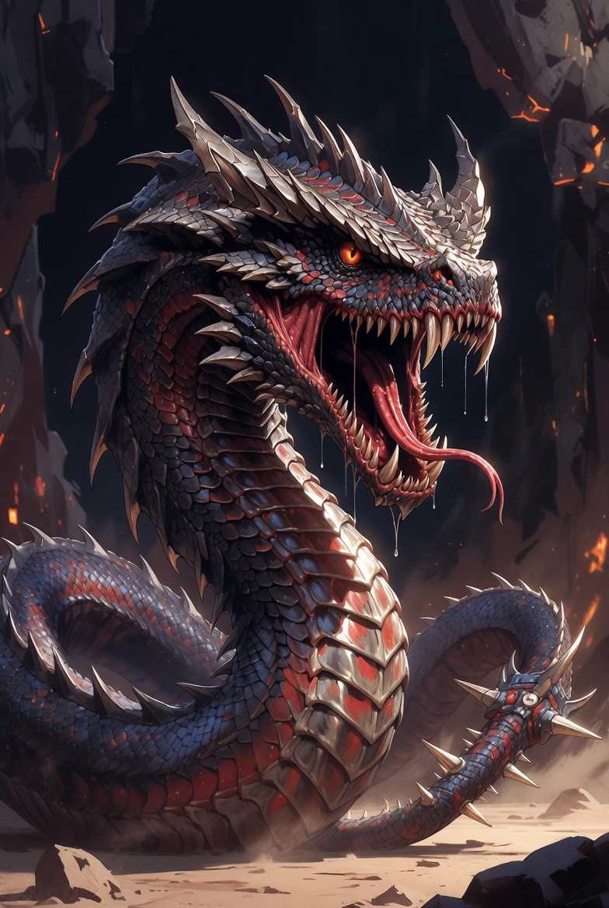
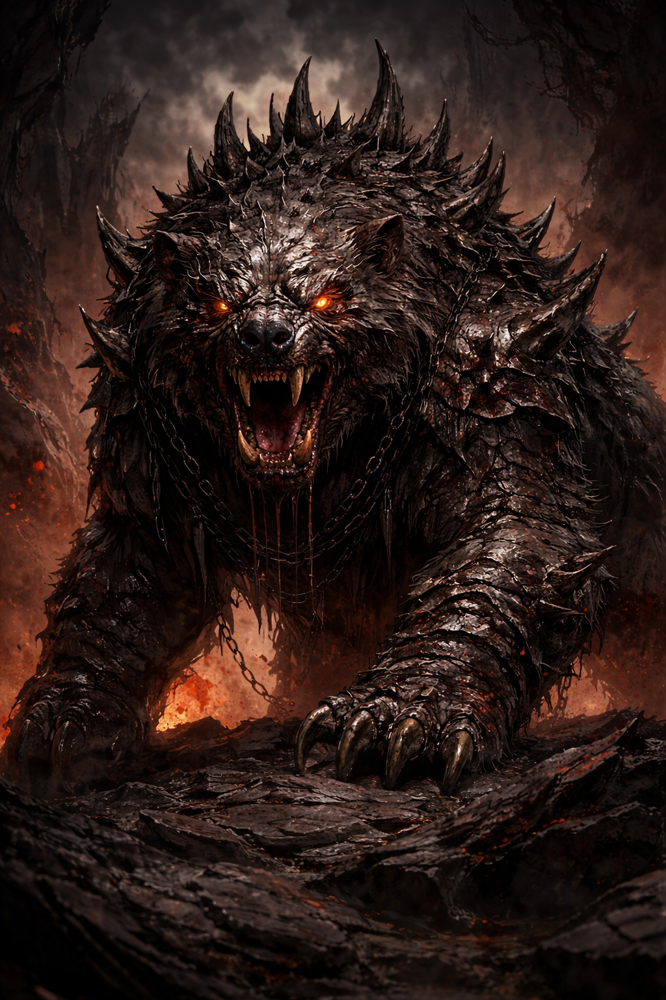

Bestiary
The creatures of Rivendawn do not care that you exist. This is important to understand before you leave the road.
What follows is a catalogue of what shares this world with you — organized, for the sake of those who prefer their mortality clearly labeled, by threat. Rank 1 creatures will not kill you unless you are extraordinarily careless or extraordinarily unlucky. Rank 6 creatures will kill you regardless. Everything between is a matter of preparation, awareness, and the wisdom to know when running is not a failure of character but a demonstration of it.
The natural world is well documented. The corrupted world is less so, because those who study it closely tend not to return with notes. What I have recorded here is accurate to the best of my considerable knowledge. Whether that knowledge is sufficient to keep you alive is, as always, entirely your problem.
— The WatcherPart I — Natural Creatures
These are the animals of the known world — present in every region in varying numbers, studied by Citadel scholars, and dangerous in proportion to their size, temperament, and proximity to a Riven. A wolf near a settlement is a nuisance. The same wolf after three seasons near a Riven boundary is something else entirely.
| Creature | Description | Habitat | Rank |
|---|---|---|---|
| Bat | Cave and ruin dweller. Harmless alone, disorienting in numbers. | Caves, ruins, limestone caverns | Rank 1 |
| Bee | Pollinators throughout the Cradle farmlands. Hives are territorial. | Cradle valleys, forest edges | Rank 1 |
| Carp | Common river fish. Present in nearly every Cradle waterway. | Rivers, lakes, Cradle region | Rank 1 |
| Frog | Abundant near water sources. Some species produce mild toxins. | Wetlands, riverbanks | Rank 1 |
| Horse | Essential for travel between regions. Domesticated throughout the settled world. | Stables, open plains, Cradle | Rank 1 |
| Pigeon | Used for communication across regions. Harmless. | Settlements, citadels, ruins | Rank 1 |
| Rabbit | Common prey animal. Fast and difficult to catch without preparation. | Grasslands, forest edges, Limestone uplands | Rank 1 |
| Rat | Found wherever food is stored. Carriers of disease in large populations. | Settlements, sewers, grain stores | Rank 1 |
| Raven | Intelligent scavenger. Follows armies and predators for scraps. | Forests, open country, ruins | Rank 1 |
| Scorpion | Desert and rock dweller. Sting is painful; rarely fatal to adults. | Limestone rocky terrain, dry regions | Rank 1 |
| Skunk | Non-aggressive unless threatened. The threat is not physical. | Forest edges, grasslands | Rank 1 |
| Spider | Widespread. Most species are harmless. Several are not. | Forests, caves, ruins, everywhere | Rank 1 |
| Weasel | Fast, aggressive for its size. Targets small livestock and stores. | Forests, farmland edges | Rank 1 |
| Badger | Territorial and stubborn. Will not retreat from anything. | Grasslands, forest edges, Limestone | Rank 2 |
| Boar | Aggressive when cornered. Tusks cause serious injury at close range. | Forests, Cradle farmland edges | Rank 2 |
| Eagle | Apex aerial predator. Territorial around nesting sites. | Mountains, Forge peaks, open country | Rank 2 |
| Falcon | Used in hunting by Cradle nobility. Wild specimens are fast and precise. | Open plains, mountain thermals | Rank 2 |
| Otter | River-dwelling. Playful until defending territory or young. | Rivers, lakes, Cradle waterways | Rank 2 |
| Owl | Silent nocturnal hunter. Rarely a threat to people; hazardous to small animals. | Forests, ruins, all regions | Rank 2 |
| Porcupine | Passive until threatened. Quills cause infection if not removed promptly. | Forests, Limestone uplands | Rank 2 |
| Snake, Constrictor | Ambush predator. Targets prey up to the size of a large dog. | Forests, wetlands, Cradle region | Rank 2 |
| Snake, Venomous | Variable venom potency by species. All require prompt treatment. | Limestone rocky terrain, forests | Rank 2 |
| Vugle | Undead pest. Will not kill you. Will eat your rations, soil your pack, and scream until you question your life choices. Travels in flocks. | Riven boundaries, wilderness, everywhere unfortunate | Rank 2 |
| Vulture | Scavenger. Aggressive around carrion. Occasionally opportunistic with the injured. | Open country, battlefields, Limestone | Rank 2 |
| Wolf | Pack hunters. Individually manageable; in coordinated groups, significantly less so. | Forests, Thalmen plains, Limestone | Rank 2 |
| Bear, Black | Common in forested regions. Avoids confrontation unless surprised or protecting cubs. | Forests, Cradle edges, Limestone | Rank 3 |
| Bear, Brown | Larger and more aggressive than the black bear. Forge mountain variant is particularly formidable. | Forge mountains, northern forests | Rank 3 |
| Crocodile | Ambush predator in and near water. Deceptively fast over short distances. | Cradle rivers, wetlands | Rank 3 |
| Honey Badger | Fears nothing. This is not an exaggeration. Documented attacking creatures twenty times its size. | Forests, grasslands, Limestone | Rank 3 |
| Lion | Apex ambush predator. Pride hunting tactics make them extremely dangerous in open terrain. | Limestone grasslands, open plains | Rank 3 |
| Panther | Silent, solitary, and patient. Rarely seen before the attack. | Dense forests, Cradle region edges | Rank 3 |
| Shark | Coastal and river-mouth predator. Several species have been documented in Cradle waterways. | Coastal waters, large rivers | Rank 3 |
| Swarm, Bats | Disorienting and capable of causing falls in confined spaces. Individually harmless. | Caves, ruins, Limestone caverns | Rank 3 |
| Swarm, Bees | Provoked hive will pursue for significant distance. Stings accumulate rapidly. | Forests, Cradle farmland | Rank 3 |
| Swarm, Rats | A large enough swarm can overwhelm a person. Carry disease. Strip stored food in hours. | Settlements, ruins, grain stores | Rank 3 |
| Swarm, Ravens | Coordinated and intelligent. Target eyes and exposed skin. Disorienting in numbers. | Open country, ruins, battlefields | Rank 3 |
| Tiger | Solitary ambush predator. Larger than the lion and considerably more patient. | Dense forests, northern Cradle edges | Rank 3 |
| Giant Crab | Coastal ambush predator. Claws exert enough pressure to crush bone. | Coastal regions, rocky shores | Rank 4 |
| Giant Squid | Deep water predator. Occasionally surfaces near Cradle river mouths. Reason unclear. | Deep coastal waters, large lakes | Rank 4 |
| Gorilla | Territorial and immensely strong. Charges are not always bluffs. | Dense forests, wilderness regions | Rank 4 |
| Hippopotamus | Responsible for more deaths in the Cradle riverlands than any other natural animal. Deceptively aggressive. | Cradle rivers, wetlands | Rank 4 |
| Killer Whale | Apex ocean predator. Documented attacking small watercraft near the western coast. | Open ocean, western coastline | Rank 4 |
| Polar Bear | The largest natural bear. Thalmen Reach exclusive. Actively hunts people when food is scarce. | Thalmen Reach, far northern coast | Rank 4 |
| Rhinoceros | Nearly unstoppable in a charge. Territorial and unpredictable. | Open plains, Limestone grasslands | Rank 4 |
Part II — Creatures of Rivendawn
These are not animals in any ordinary sense. They are what the world produces when the Song is disrupted, when Riven corruption spreads into an ecosystem long enough, or when something evolves in the deep wilderness without the moderating influence of human presence. Several of these entries represent species unique to Rivendawn. Others are what familiar species become when the world breaks around them.
Treat all of them with extreme caution. Treat the Rank 6 entries as information for your surviving companions rather than personal guidance.
| Image | Creature | Description | Habitat | Rank |
|---|---|---|---|---|
 |
Vuu'zclaw
Natural Form
|
A mustelid-type predator found in forested and wilderness regions. White-faced, amber-eyed, and equipped with saber teeth disproportionate to its size. Fast, aggressive when cornered, and considerably smarter than it has any right to be. Hunts alone. Does not warn before striking. | Forests, wilderness | Rank 3 |
 |
Vuu'zclaw
Corrupted Form
|
Riven-exposed Vuu'zclaw. Red eyes, degraded fur, behavioral changes consistent with advanced corruption. Loses the natural form's caution entirely — charges without hesitation, does not retreat, does not tire. The intelligence remains. The restraint does not. | Riven boundaries, corrupted forest | Rank 5 |
 |
Thornback Crawler
Cave Predator
|
An arachnid predator found in Riven-adjacent cave systems. Multiple green-luminescent eyes, oversized foreclaws, and an exoskeleton that resists conventional weapons. Wades through toxic Riven fluid without apparent discomfort. Does not pursue prey beyond the cave boundary — which is the only comfort available regarding this creature. | Riven caves, deep Limestone caverns | Rank 5 |
 |
Greymaw
Aquatic Predator
|
A pale, deep-water fish of abnormal size found in Cradle river systems and the lakes of the northern territories. Three eyes, bioluminescent spots, and teeth arranged in multiple rows. Blind to surface light — hunts by vibration. Do not enter water where Greymaw have been reported. Do not trail a hand from a boat. Do not assume the water is safe because you cannot see the bottom. | Deep rivers, northern lakes, Cradle waterways | Rank 5 |
 |
Vugle
Undead Pest
|
A Vugle. It will not kill you. It will eat your rations, soil your pack, steal anything that catches its eye, and emit a sound that defies adequate description at intervals timed to prevent sleep. Travels in flocks. Smells like a Riven and a seagull reached an unfortunate agreement. I have nothing further to add. Neither, shortly, will you. | Riven boundaries, wilderness, anywhere inconvenient | Rank 2 |
 |
Soul Minder
Humanoid Form
|
The most commonly encountered form of the Soul Minder — gaunt, pale, hollow-eyed, with black veins visible beneath translucent skin. Whether this is the creature's base form or a transitional state is unknown. What is known is that proximity causes disorientation, that it does not appear to require sustenance in any conventional sense, and that those who survive encounters describe a persistent sense of absence afterward — as if something was removed that has not yet been identified. | Riven interiors, deep wilderness, ruins | Rank 5 |
 |
Soul Minder
Serpent Forms
|
The larger manifestations of the Soul Minder family — scaled, multi-spiked, dripping with Riven corruption, and ranging from the size of a large constrictor to something considerably larger. Whether these are the same creature in a different state, related species, or something the Soul Minder becomes under specific conditions remains an open question that I strongly recommend you not investigate personally. All serpent forms are venomous. All are aggressive. All represent a Rank 6 encounter without exception. | Riven interiors, corrupted terrain | Rank 6 |
 |
Rivenbear
Riven Apex Predator
|
What a bear becomes after sufficient Riven exposure and sufficient time. The Rivenbear is armored. It is spiked. Its eyes glow with the same orange-red luminescence visible at a Riven's heart. It has been documented shrugging off weapons that would kill a polar bear. It does not appear to sleep, does not appear to tire, and has been observed breaking through fortified structures to reach prey inside. There is no tactical advice for a Rivenbear encounter that does not begin with the word "run." Run now. Run far. Do not look back to see if it is still following. It is still following. | Riven interiors, deep corrupted wilderness | Rank 6 |